01Following the right person
A busy dojang has parents, instructors and other students in view. In the first field test the tracker followed a seated observer, so exam runs stopped at the first movement.
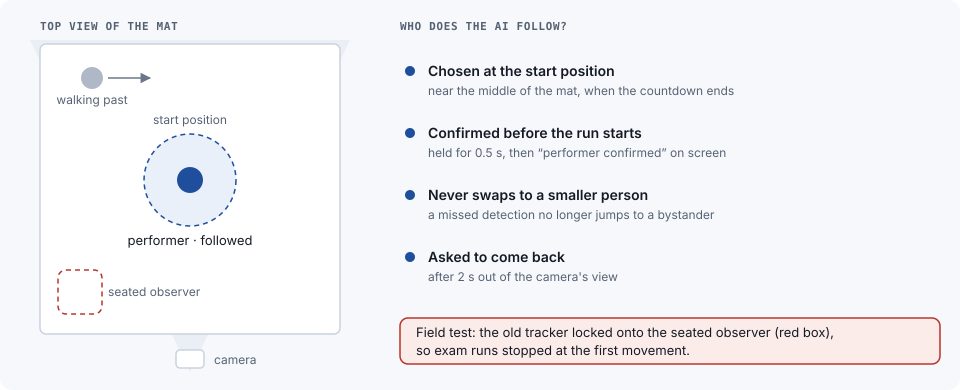
A kiosk that watches a student perform a poomsae through one webcam, recognises every movement in order, scores it against skilled performers, and gives posture feedback. It runs live on a consumer GPU, with no server.
I built this at my previous company and handed it over to a new team. The code, models and data belong to the company and are not public. This page is shared with the company's permission and contains no training data, student data or company resources.
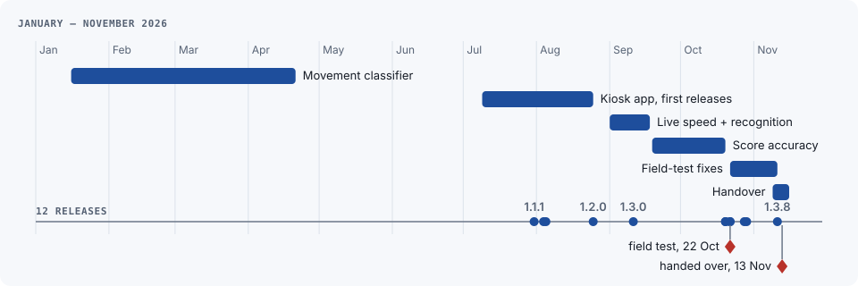

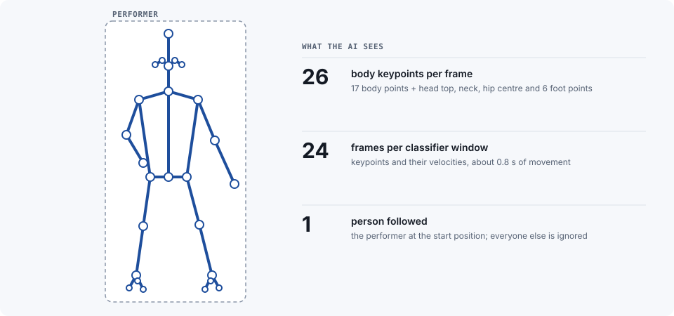
A busy dojang has parents, instructors and other students in view. In the first field test the tracker followed a seated observer, so exam runs stopped at the first movement.

A per-frame classifier is noisy, and some movements look alike. Every guess passes a ladder of rules, each added after a failure in a recording or a live test.
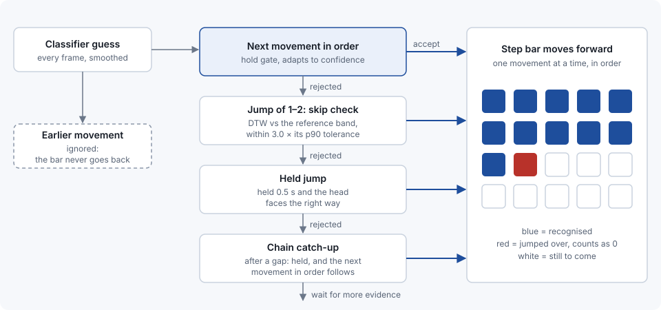
Result: clean runs reach the end with all 20 movements, and the bar catches up after the camera loses the student for a few seconds.
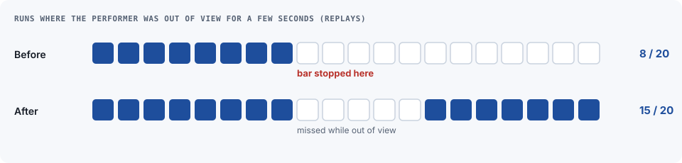
The catch-up rules worked in replays but almost never live. The recogniser's clock could step backwards and reset its timers. Replays used a fixed frame rate, so the bug never showed there.
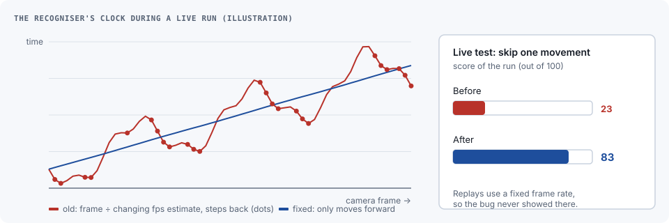
The skeleton lagged on fast movements. Forcing all AI inference onto the CPU disproved my first theory (GPU contention). Profiling the GIL led to the real causes.
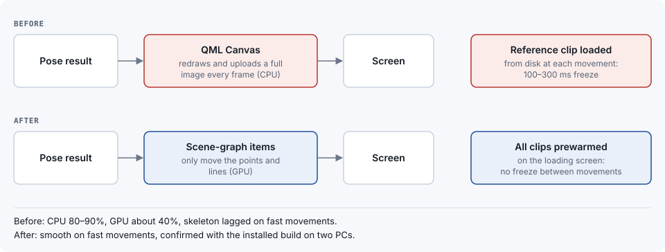
The instructor evaluations available were all of skilled performers at the same level, so agreeing with them couldn't prove anything. Instead I injected known errors into real keypoints and checked that the right score reacted.
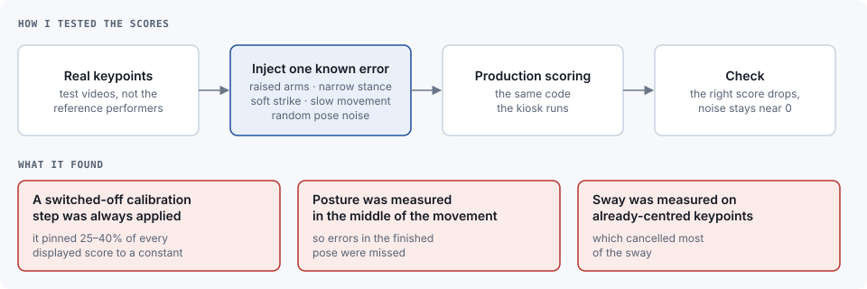
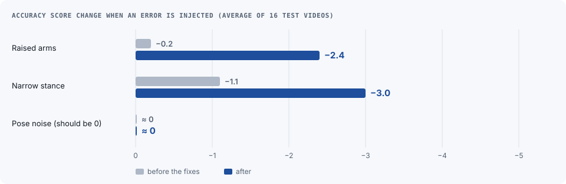
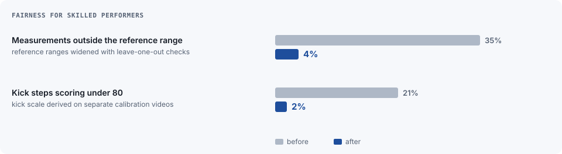
The field test showed a beginner and an advanced student still scoring almost the same. The live kiosk path was still using the old formulas. Once it was connected:
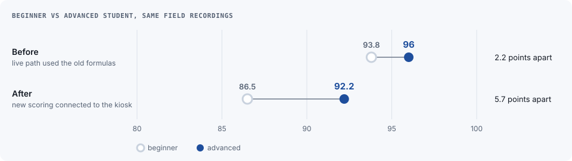
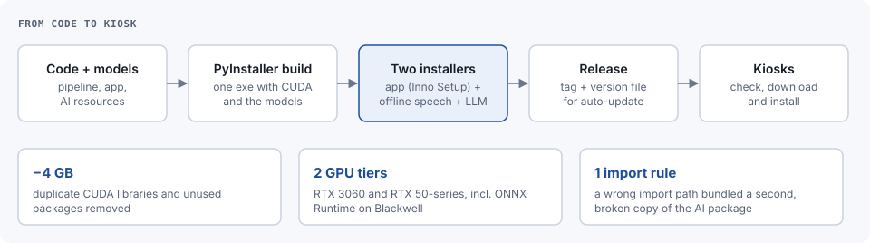
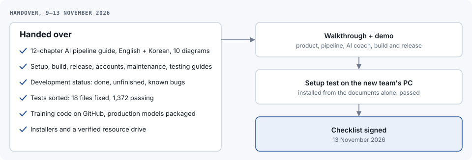

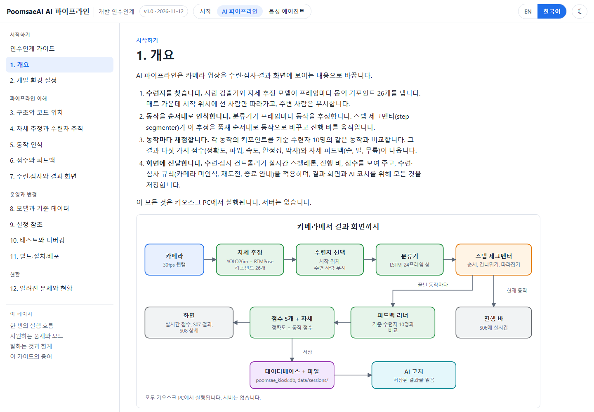
Forcing the CPU disproved my own theory; error injection found bugs that label correlation never would.
The clock bug and the scoring bug both existed only in the live path.
Labels from one skill level can't validate a score meant to separate levels.
Each recognition constant names the recording or test behind it.
The new team set the system up from the documents alone.
| Area | Tools |
|---|---|
| Pose | YOLO26m person detector, RTMPose (26 keypoints), ONNX Runtime GPU |
| Recognition | PyTorch LSTM per form (24-frame windows), rule-based step segmenter, DTW skip check |
| Scoring | Reference performer comparison: whole-body distance, posture ranges, DTW movement paths, technique scaling |
| App | PySide6 / QML kiosk (11 screens), worker threads, SQLite, InsightFace face login |
| Voice AI coach | Built by my teammate: wake word, speech recognition, LLM with knowledge base, text-to-speech |
| Operations | PyInstaller, Inno Setup, auto-update, kiosk backup, performance logging |
| Quality | pytest (1,372 tests), error-injection tests, live acted tests, dojang field tests |